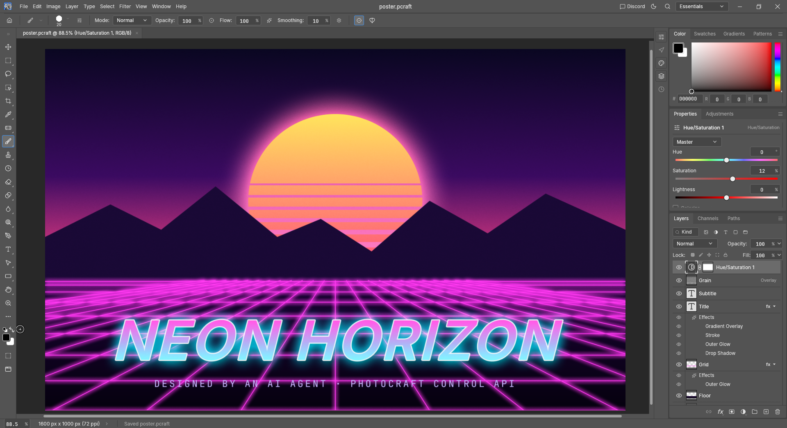

Claude · Opus 5.5 ▾
New chat

poster.pcraft · canvas attached
Make the sun more orange and add a small crescent moon in the top-left corner with a soft cyan glow.
Claude
I'll shift the sun's gradient warmer and add a moon as a new shape layer so you can still move it.
✓document.inspect11 layers
✓shape fill · Sun#ffb347 → #ff5e3a
✓shape.create · Moonellipse − ellipse
✓layer style · Outer Glow#7ef9ff, 40 px
✓ui.screenshotchecked result
Done. The sun now runs from amber to deep orange, and "Moon" sits above the sky gradient at 180 × 180 px.
Undo this reply (4 steps)Show layers
Make the title glow match the moon.
Claude
●layer style · Titlerunning…
Ask for an edit, or describe what you want…
Attach canvas · Layer: Title Stop
Pick the provider and model. The list and the usage meter come live from your signed-in CLI, never an API key.
Each edit the model makes shows as a step: PhotoCraft commands, the same ones the menus run.
A whole reply is one undo group, so a bad answer is one click away from gone.
The canvas goes along as a picture when "Attach canvas" is on, so the model sees what you see.
Stop ends the reply between steps. The chat keeps going on the next message, in the same session.